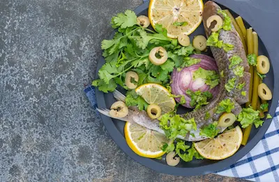

Dieta Mediterránea: Menú Semanal y Beneficios Científicos
Fundamentos nutricionales
La dieta mediterránea se basa en el consumo de alimentos frescos y mínimamente procesados, con el aceite de oliva virgen extra como principal fuente de grasa. Este patrón alimentario incluye abundantes frutas, verduras, legumbres, frutos secos y cereales integrales, junto con un consumo moderado de pescado, aves y lácteos. El vino tinto se consume con moderación durante las comidas, mientras que las carnes rojas y los dulces aparecen solo ocasionalmente en el menú.
Lo que hace única a esta dieta es su equilibrio entre macronutrientes y su riqueza en compuestos bioactivos. El aceite de oliva aporta polifenoles como el hidroxitirosol, con potentes efectos antiinflamatorios, mientras que el pescado azul proporciona ácidos grasos omega-3 EPA y DHA. Las hierbas aromáticas no solo reducen el uso de sal, sino que añaden antioxidantes adicionales a las preparaciones culinarias.
Beneficios para la salud cardiovascular
Numerosos estudios, incluido el famoso estudio PREDIMED, han demostrado que la dieta mediterránea reduce significativamente el riesgo de enfermedades cardiovasculares. Esta protección se debe a su capacidad para mejorar el perfil lipídico (aumentando el HDL y reduciendo el LDL oxidado), disminuir la presión arterial y reducir la inflamación sistémica. Los polifenoles del aceite de oliva y el vino tinto mejoran la función endotelial, previniendo la formación de placas ateroscleróticas.
Además de sus efectos cardioprotectores, esta dieta ha mostrado beneficios en la prevención de síndrome metabólico y diabetes tipo 2. Su alto contenido en fibra regula la absorción de glucosa, mientras que las grasas monoinsaturadas mejoran la sensibilidad a la insulina. La combinación de estos factores explica por qué la UNESCO la ha declarado Patrimonio Cultural Inmaterial de la Humanidad.
Impacto en la longevidad y salud cerebral
Las poblaciones que siguen tradicionalmente la dieta mediterránea presentan una mayor esperanza de vida y menor incidencia de enfermedades neurodegenerativas. Los ácidos grasos omega-3 del pescado, junto con los antioxidantes de frutas y verduras, protegen las membranas neuronales y reducen el estrés oxidativo en el cerebro. Estudios de neuroimagen muestran que adherentes a esta dieta mantienen mayor volumen cerebral en edades avanzadas.
El efecto sobre los telómeros, estructuras relacionadas con el envejecimiento celular, es particularmente notable. Investigaciones han encontrado que quienes siguen este patrón alimentario tienen telómeros más largos, lo que sugiere un envejecimiento celular más lento. Estos beneficios se potencian con el estilo de vida mediterráneo, que incluye actividad física regular y comidas sociales relajadas.
Menú semanal práctico
Desayunos: Alternar entre tostadas integrales con tomate y aceite, yogur griego con nueces, o tortilla de espinacas. Comidas principales: Ensaladas variadas con atún o legumbres, paellas de marisco, o pescados al horno con verduras. Cenas: Sopas de verduras, cremas de legumbres o tortillas francesas con ensalada. Snacks: Fruta fresca, puñado de almendras o bastones de zanahoria con hummus.
Para adaptarla fuera del Mediterráneo: usar pescados locales ricos en omega-3 (sardinas, caballa), elegir aceite de oliva virgen extra de calidad, y priorizar vegetales de temporada. Incluir hierbas aromáticas en lugar de sal y mantener el consumo de vino tinto opcional y moderado (1-2 copas al día).